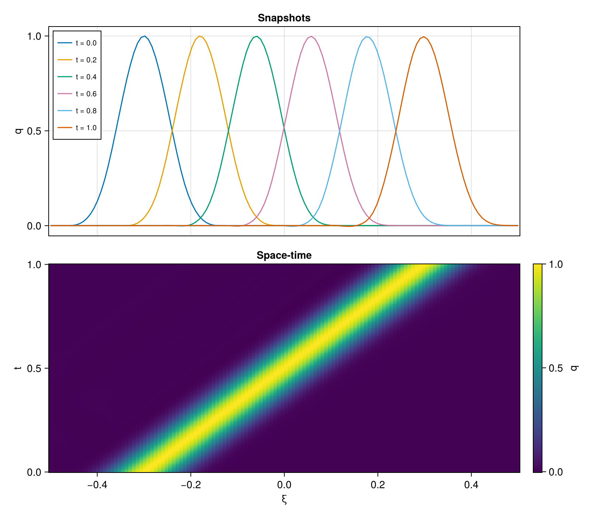

The Discretized Linear Wave
The linear wave equation in one dimension has the following Hamiltonian (see e.g. [2]):
\[ \mathcal{H}_\mathrm{cont}(q, p; \mu) := \frac{1}{2}\int_\Omega \mu^2(\partial_\xi q(t, \xi; \mu))^2 + p(t, \xi; \mu)^2 d\xi,\]
where the domain is $\Omega = (-1/2, 1/2)$. We then divide the domain into $\tilde{N}$ equidistantly spaced points[1] $\xi_i = i\Delta_\xi - 1/2$ for $i = 1, \ldots, \tilde{N}$ and $\Delta_\xi := 1/(\tilde{N} + 1)$.
\[ \mathcal{H}_h(z) = \frac{1}{2} \sum_{i = 1}^{\tilde{N} + 2} p_i^2 + \frac{\mu^2}{4\Delta_\xi^2} \sum_{i = 2}^{\tilde{N} + 1} \left[ (q_i - q_{i - 1})^2 + (q_{i+1} - q_i)^2 \right].\]
The discretized linear wave equation is an example of a completely integrable system, i.e. a Hamiltonian system evolving in $\mathbb{R}^{2n}$ that has $n$ Poisson-commuting invariants of motion (see [3]).
For evaluating the system we specify the following initial[2] and boundary conditions:
\[\begin{aligned} q_0(\omega;\mu) := & q(0, \omega; \mu) \\ p(0, \omega; \mu) = \partial_tq(0,\xi;\mu) = & -\mu\partial_\omega{}q_0(\xi;\mu) \\ q(t,\omega;\mu) = & 0, \text{ for } \omega\in\partial\Omega. \end{aligned}\]
Solution
By default GeometricProblems uses the following parameters:
using GeometricIntegrators
using CairoMakie
import GeometricProblems.LinearWave as lw
lw.default_parameters()(μ = 0.6,)And if we integrate we get:
# A smaller lattice than the default Ñ = 256. The figure is indistinguishable, but an implicit step
# solves a dense 2n-dimensional nonlinear system, so the cost of the integration grows as n³.
N = 128
sol = integrate(lw.hodeproblem(N), ImplicitMidpoint())
Ω = lw.compute_domain(N + 2) # N interior points plus the two boundary points
nt = length(sol.t) - 1 # the time axis of a DataSeries runs 0:nt
fig = Figure(size = (800, 700))
ax1 = Axis(fig[1, 1]; ylabel = "q", title = "Snapshots")
for step in round.(Int, range(0, nt, length = 6)) # `0:nt÷5:nt` would stop short of the last step
lines!(ax1, Ω, sol.q[step, :]; label = "t = $(round(sol.t[step]; digits = 2))")
end
axislegend(ax1; position = :lt, labelsize = 10)
# q over the whole (ξ, t) plane: a single band with one slope, which is the one-directional travel
# that the snapshots above only hint at.
Q = [sol.q[n][i] for i in eachindex(Ω), n in 0:nt]
ax2 = Axis(fig[2, 1]; xlabel = "ξ", ylabel = "t", title = "Space-time")
hm = heatmap!(ax2, Ω, collect(sol.t), Q)
Colorbar(fig[2, 2], hm; label = "q")
linkxaxes!(ax1, ax2)
hidexdecorations!(ax1; grid = false)
fig
As we can see the pulse travels in one direction, at the speed $\mu$ set by the initial momentum $p(0, \omega; \mu) = -\mu \partial_\omega q_0$, and keeps its shape — the discretization is non-dispersive to the resolution of the figure.
Implementation
The equations of motion are written by hand. Because the sum above runs over the interior points $i = 2, \ldots, \tilde{N}+1$, it counts every interior difference twice, so with $d_k := q_{k+1} - q_k$ the potential is
\[ V(q) = \frac{c}{2} \sum_{k=1}^{\tilde{N}+1} w_k d_k^2, \qquad c := \frac{\mu^2}{2\Delta_\xi^2}, \qquad w_k := 2 - [k = 1] - [k = \tilde{N}+1],\]
i.e. the two boundary weights are $1$ rather than $2$, and $\partial V/\partial q_j = c \, (w_{j-1} d_{j-1} - w_j d_j)$ with $d_0 = d_{\tilde{N}+2} = 0$. Substituting the weights splits that into a uniform weight-two stencil plus four scalar corrections at the boundaries, which is how ∇V! is written: the loop is then branch-free, each output is written exactly once, and the expression is correct for every $\tilde{N} \ge 1$ without any case analysis at the edges.
The Lagrangian $L = \tfrac{1}{2} \sum_k \dot q_k^2 - V(q)$ is regular — $\vartheta = \partial L/\partial\dot q = \dot q$, so the mass matrix $M = \partial\vartheta/\partial\dot q$ is the identity. It is therefore a second-order system of $n = \tilde{N} + 2$ equations, equivalently first order in $2n$, and its Lagrange two-form is the $2n \times 2n$ canonical $\omega = [\,0\; -I;\; I\; 0\,]$.
Passing symbolic = true to any of the four constructors generates the equations of motion with EulerLagrange instead. The two agree to round-off and the tests check that they do, but the symbolic route does not scale: EulerLagrange builds $\omega$ by differentiating a dense $2n \times 2n$ matrix, so at the default $\tilde{N} = 256$ lodeproblem(; symbolic = true) takes 155 s and emits 14 MB of code for a two-form that no integrator evaluates. benchmark/linear_wave.jl has the measurements.
Library functions
GeometricProblems.LinearWave — Module
The discretized version of the 1d linear wave equation.
It is a prime example of a non-trivial completely integrable system.
The system is discretized on N interior points — the $\tilde{N}$ of the documentation page — so the state has N + 2 components once the two boundary points are included.
Like the number of lattice sites of TodaLattice, N fixes the size of the system: it sets the number of degrees of freedom and the summation bounds, so it cannot survive symbolize and hence cannot be a system parameter. It is instead a leading positional argument of the problem constructors, defaulting to Ñ = 256, and hamiltonian/lagrangian take it as a trailing argument. The only system parameter proper is $\mu$.
hodeproblem, lodeproblem, hodeensemble and lodeensemble use hand-written vector fields by default: in-place v, f, ϑ, g and ω! over a shared ∇V! kernel. Passing symbolic = true generates the equations of motion with EulerLagrange via hamiltonian_system or lagrangian_system instead, which agrees to round-off and is kept for cross-checking.
The symbolic route is unusable at the default size. EulerLagrange builds the $2n × 2n$ Lagrange two-form by symbolically differentiating a dense matrix, which at $n = 258$ is 266 k entries: lagrangian_system(256, …) takes 155 s and emits 14 MB of code for an ω whose first evaluation costs a further 147 s — all for a two-form that no integrator in GeometricIntegrators ever evaluates and that GeometricEquations.check_methods skips. Construction grows as $n^{2.5}$ and the generated ω as $n^2$, while hodeproblem/lodeproblem in their default form build in a tenth of a millisecond at any size. Per call the hand-written code is the faster one too, by 1.4–1.9× for the force and 6–8× for H and L. See benchmark/linear_wave.jl.
GeometricProblems.LinearWave.compute_initial_condition — Method
Produces initial conditions for the bump function. Here the $p$-part is initialized with zeros.
GeometricProblems.LinearWave.compute_initial_condition2 — Method
Produces initial condition for the bump function. Here the $p$-part is initialized as $-\mu\partial_\xi u_0(\xi, \mu)$.
GeometricProblems.LinearWave.h — Method
Third-degree spline that is used as a basis to construct the initial conditions.
GeometricProblems.LinearWave.hamiltonian_system — Method
hamiltonian_system(N, parameters)The EulerLagrange HamiltonianSystem for the linear wave equation on N interior points, from which hodeproblem(…; symbolic = true) takes its v, f and H.
Cheap at every size — 1.9 s at the default Ñ = 256 — since a Hamiltonian system carries no two-form. Contrast lagrangian_system.
GeometricProblems.LinearWave.hodeensemble — Function
hodeensemble(N, q₀, p₀; timespan, timestep, parameters, symbolic)Hamiltonian ensemble for the linear wave equation (varying initial conditions and/or parameters).
Takes the same arguments as hodeproblem, with q₀, p₀ and/or parameters given as vectors of samples.
GeometricProblems.LinearWave.hodeproblem — Function
hodeproblem(N, q₀, p₀; timespan, timestep, parameters, symbolic)Hamiltonian problem for the linear wave equation on N interior points.
Constructor with default arguments:
hodeproblem(
N = 256,
q₀ = compute_initial_condition2(μ̃, N + 2).q,
p₀ = compute_initial_condition2(μ̃, N + 2).p;
timespan = (0, 1),
timestep = 0.005025125628140704,
parameters = (μ = 0.6,),
symbolic = false
)With symbolic = true the equations of motion are generated with EulerLagrange via hamiltonian_system instead of using the hand-written vector fields. The two agree to round-off; the symbolic route is kept for cross-checking and costs 1.9 s to build at N = 256.
GeometricProblems.LinearWave.lagrangian_system — Method
lagrangian_system(N, parameters)The EulerLagrange LagrangianSystem for the linear wave equation on N interior points, from which lodeproblem(…; symbolic = true) takes its ϑ, f, g, ω and L.
This is the expensive one: it builds the $2n × 2n$ two-form by differentiating a dense matrix, so its cost grows as $n^{2.5}$ and reaches 155 s at the default Ñ = 256. See the module docstring and benchmark/linear_wave.jl.
GeometricProblems.LinearWave.lodeensemble — Function
lodeensemble(N, q₀, p₀; timespan, timestep, parameters, symbolic)Lagrangian ensemble for the linear wave equation (varying initial conditions and/or parameters).
Takes the same arguments as lodeproblem, with q₀, p₀ and/or parameters given as vectors of samples.
GeometricProblems.LinearWave.lodeproblem — Function
lodeproblem(N, q₀, p₀; timespan, timestep, parameters, symbolic)Lagrangian problem for the linear wave equation on N interior points.
Constructor with default arguments:
lodeproblem(
N = 256,
q₀ = compute_initial_condition2(μ̃, N + 2).q,
p₀ = compute_initial_condition2(μ̃, N + 2).p;
timespan = (0, 1),
timestep = 0.005025125628140704,
parameters = (μ = 0.6,),
symbolic = false
)With symbolic = true the equations of motion are generated with EulerLagrange via lagrangian_system instead of using the hand-written vector fields. The two agree to round-off, but the symbolic route takes 155 s to build at N = 256 — see the module docstring.
GeometricProblems.LinearWave.potential — Method
potential(q, parameters, N)The discretized gradient energy on N interior points,
\[V(q) = \frac{\mu^2}{4Δξ^2} \sum_{i = 2}^{N+1} \left[ (q_i - q_{i-1})^2 + (q_{i+1} - q_i)^2 \right], \qquad Δξ = \frac{1}{N+1}.\]
Both the Hamiltonian and the Lagrangian take N as a trailing argument (as in TodaLattice) rather than reading it from parameters: it fixes the number of degrees of freedom and the summation bounds, so it has to be a plain integer and cannot survive symbolize.
The sum runs over the interior points only, which is what gives the two boundary points a different stencil weight from the interior — see ∇V!.
GeometricProblems.LinearWave.ω! — Method
ω!(Ω, t, q, params)The Lagrange two-form $ω = dθ$ of this regular Lagrangian, where $θ = ϑ_i \, dq^i$.
A regular Lagrangian is a second-order system of $n$ equations, equivalent to a first-order system of $2n$, so Ω is the $2n × 2n$ form on $(q, \dot q)$ with $n = N + 2$. In block form it is $[∂ϑ_i/∂q_j - ∂ϑ_j/∂q_i \; -M^T; \; M \; 0]$; since $ϑ = ∂L/∂\dot q = \dot q$ depends on the velocities alone and the mass matrix is the identity, the upper-left block vanishes and what remains is the canonical $[0 \; -I; \; I \; 0]$.
This is the convention EulerLagrange's LagrangianSystem produces, so lodeproblem agrees whether or not symbolic = true. Note that no integrator in GeometricIntegrators evaluates ω and GeometricEquations.check_methods skips it — which is what makes the 14 MB of code EulerLagrange emits for it at the default size, and the 147 s its first evaluation then costs, pure overhead.
GeometricProblems.LinearWave.∇V! — Function
∇V!(dV, q, parameters, N, α = 1)$α$ times the gradient $∂V/∂q$ of the discretized gradient energy potential, written into dV. α = -1 gives the force $-∂V/∂q$ directly, which is what the force functions want and saves a second pass over the state compared with negating afterwards.
Writing $d_k = q_{k+1} - q_k$ and $c = μ^2 / 2Δx^2$, the sum in $V$ runs over the interior points $i = 2, …, N+1$ and therefore counts every interior difference twice, so $V = \tfrac{c}{2} \sum_{k=1}^{N+1} w_k d_k^2$ with $w_k = 2 - [k = 1] - [k = N+1]$: the two boundary weights are 1, not 2. Hence $∂V/∂q_j = c \, (w_{j-1} d_{j-1} - w_j d_j)$, with $d_0 = d_{N+2} = 0$.
Substituting the weights splits that into a uniform weight-two stencil plus four scalar corrections at the boundaries. Written that way the loop is branch-free and vectorizes, each output is written exactly once, and — unlike a peeled-boundary stencil — the expression is correct for every $N ≥ 1$ with no case analysis. It is also about twice as fast as accumulating difference by difference (dV[i] += a; dV[i-1] -= a), which reads and writes adjacent elements and so cannot be vectorized, and about twice as fast as the code EulerLagrange generates.
The four correction signs are easy to get wrong and are not checked by anything else, so test/linear_wave_tests.jl verifies this against a central finite difference of potential at several N, including the N = 1 case that a peeled-boundary stencil gets wrong.
- [2]
- P. Buchfink, S. Glas and B. Haasdonk. Symplectic model reduction of Hamiltonian systems on nonlinear manifolds and approximation with weakly symplectic autoencoder. SIAM Journal on Scientific Computing 45, A289–A311 (2023).
- 1In total the system is therefore described by $N = \tilde{N} + 2$ coordinates, since we also have to consider the two boundary points. The resulting (semi-discrete) Hamiltonian, matching the implementation, then is:
- 2The precise shape of $q_0(\cdot;\cdot)$ is described in the chapter on initial conditions.